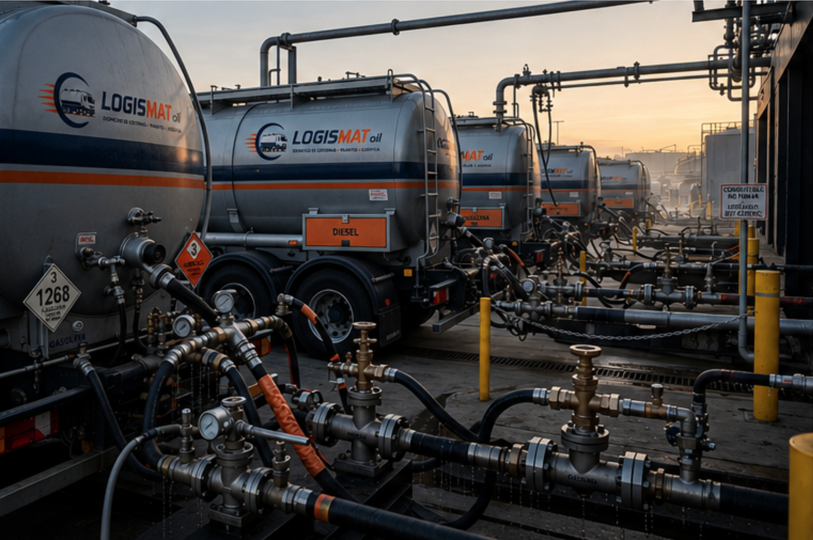
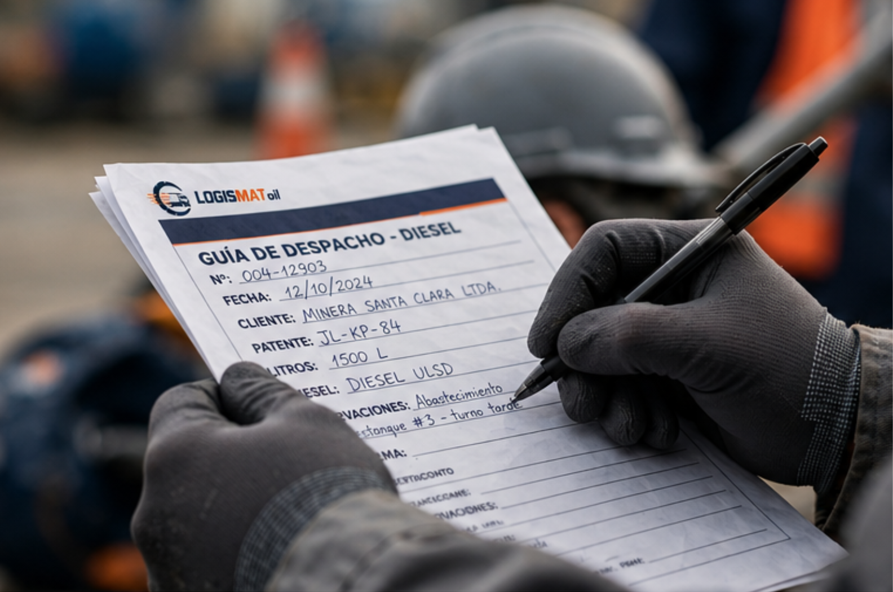
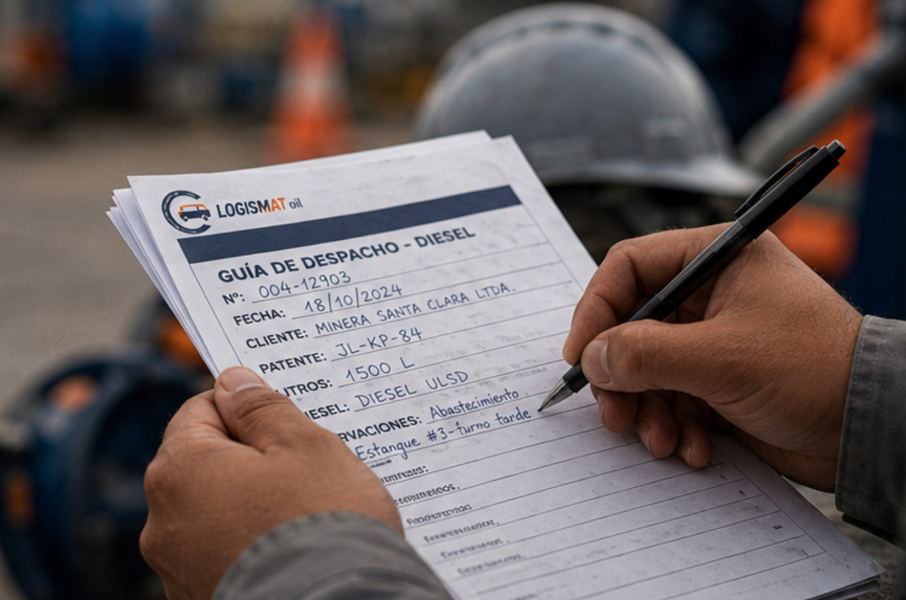
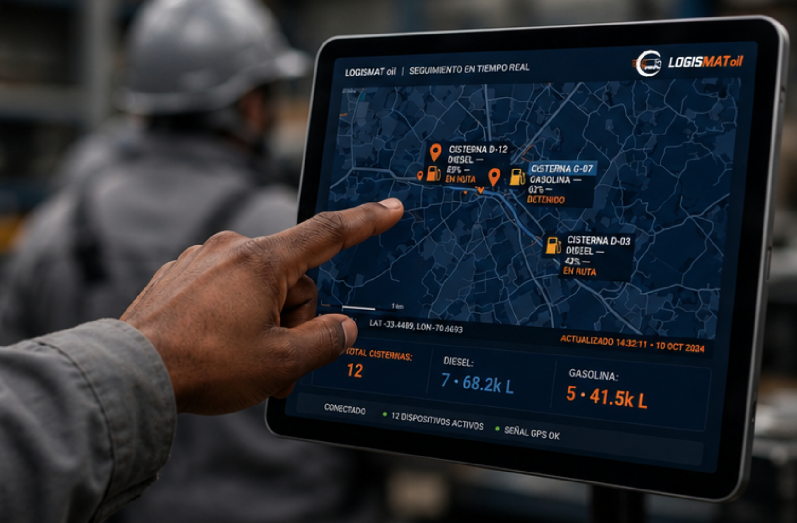

Coordinamos el despacho de cisternas, la gestión documental y las operaciones logísticas con eficiencia, seguridad y compromiso, ofreciendo soluciones confiables para cada cliente.

Soluciones logísticas diseñadas para brindar seguridad, eficiencia y confianza en cada operación.
Coordinamos operaciones de transporte y descarga de combustibles con puntualidad y seguridad.
Apoyamos en procesos administrativos y documentación necesaria para cada operación.
Brindamos soluciones logísticas en distintos puntos del país adaptándonos a cada cliente.
Acompañamos a nuestros clientes antes, durante y después de cada servicio.
LOGISMAT oil es una empresa especializada en la coordinación operativa y documental de cisternas que transportan diésel dentro de plantas de YPFB Logística. Actuamos como enlace entre empresas importadoras, transportistas y compradores para asegurar operaciones ágiles, seguras y conformes a los procedimientos establecidos.
Reducimos demoras, minimizamos riesgos operativos, mejoramos la comunicación entre las partes involucradas y brindamos seguimiento permanente para que cada descarga y despacho se complete de forma eficiente.
Brindar un servicio confiable de coordinación logística y gestión documental que garantice operaciones eficientes y transparentes.
Ser la empresa referente en coordinación logística y fiscalización de operaciones de combustibles en Bolivia.
Nos encargamos de cada etapa del proceso para que tu operación sea rápida, segura y eficiente.

Cuéntanos qué necesitas y elaboraremos una propuesta adaptada a tu operación.

Organizamos rutas, horarios, documentación y logística para garantizar eficiencia.
Supervisamos la carga, el transporte y la descarga de forma segura y puntual.

Acompañamos todo el proceso hasta finalizar la operación con éxito.
Nuestro compromiso es brindar un servicio seguro, eficiente y transparente durante toda la operación logística.
Supervisamos cada etapa del proceso para reducir riesgos y garantizar operaciones seguras.
Atendemos cada solicitud con rapidez para evitar retrasos en las operaciones.
Gestionamos documentación, horarios y seguimiento hasta finalizar el despacho.
Cada cliente recibe acompañamiento continuo antes, durante y después de la operación.